Key Takeaways
- Controls how long the Android work profile can remain switched off.
- Ensures users regain access to work apps and data within the configured period.
- Provides administrators with better control over Android Enterprise COPE devices.
- Helps maintain consistent work profile settings across assigned devices
In this post we are discussing Control How Long Android Enterprise Work Profiles Can Remain Turned Off using Intune Policy. Microsoft recently introduced improvements to Android Enterprise management in Intune, giving organizations better control over work profiles on managed devices. One useful setting is Number of days work profile is allowed to be switched off. Limit Work Profile Switch Off Duration policy allows administrators to control how long a user can keep the work profile turned off. This helps ensure that company applications and work data remain available when required.
Table of Contents
Control How Long Android Enterprise Work Profiles Can Remain Turned Off using Intune Policy
Using Microsoft Intune, administrators can configure the required number of days and apply the policy to the appropriate Android Enterprise devices. For example, setting the value to 7 days limits the work profile switch-off period to seven days. Set the maximum number of days a work profile can be turned off before the work profile is removed. Value of 0 means no limit. Available for corporate-owned work profile (COPE) devices running Android 11+.
Create Profile
The Limit Android Work Profile Switch-Off Duration to Maintain Work Access Using Intune policy can be configured centrally and assigned to the required devices or users. So, first sign in to the Microsoft Intune admin center Go to Devices > Configuration.
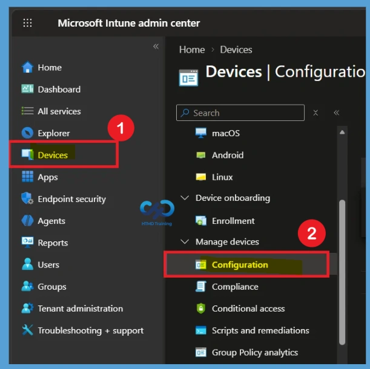
Then Create > New Policy. Select Android Enterprise as the platform and choose Settings Catalog as the profile type. Select Create to start configuring the Limit Android Work Profile Switch-Off Duration to Maintain Work Access using Intune policy.
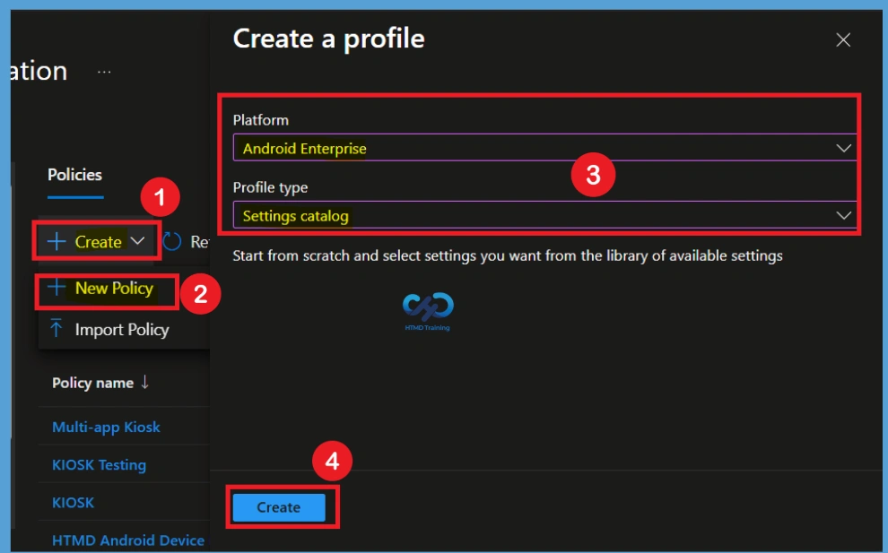
Basic Tab
In the Basics tab, enter Limit Android Work Profile Switch-Off Duration to Maintain Work Access Using Intune in the Name field. Use a simple description such as Limits how long the work profile can remain switched off. A clear name and description help administrators quickly understand the purpose of the policy. After entering the required information, review the details to make sure the correct policy name and description are displayed. Select Next to move to the Configuration settings section and continue configuring the policy.
- Name: Android Enterprise – Limit Work Profile Switch Off
- Description: Limits how long the work profile can remain switched off.
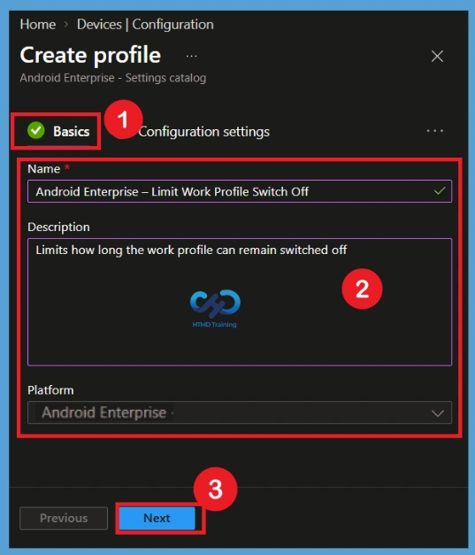
Configuration Settings
On the Configuration settings page, select Add settings to open the Settings Catalog. Search for Number of days work profile is allowed to be switched off and select the setting or select device restriction then select the General category. This is the main setting used by the Maximum days to turn off work profile to Maintain Work Access Using Intune policy.
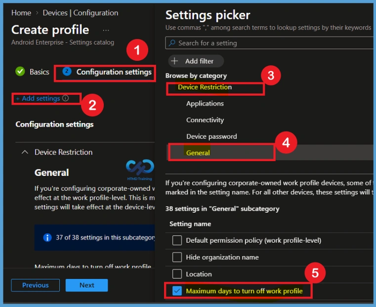
Defaulted Value- 0 (Disable the Policy)
Select the required setting from the Settings Picker window. After selecting the setting, close the Settings Picker window to return to the Configuration settings page. On the Configuration settings page, you can now see Maximum Days to Turn Off Work Profile Policies with the value set to 0. These 0 values is the default setting for the Limit Android Work Profile Switch-Off Duration to Maintain Work Access using Intune policy. A value of 0 means that the policy is disabled, so no maximum number of days is configured by default.
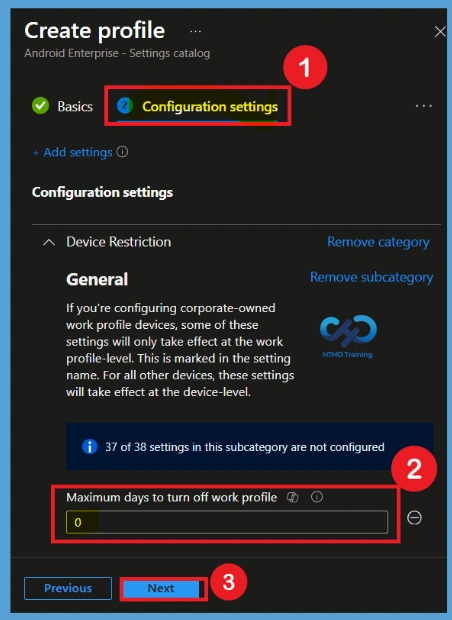
Enable the Policy – Set the Maximum Days
If you want to enable the Limit Android Work Profile Switch-Off Duration to Maintain Work Access Using Intune policy, change the Maximum Days to Turn Off Work Profile Policies value from 0 to the required number of days. For example, enter 3 as the value to allow the work profile to remain turned off for up to three days. After entering 3, verify that the value is correct and that the setting is enabled. Once you have confirmed the configuration, click Next to continue to the Scope Tags page
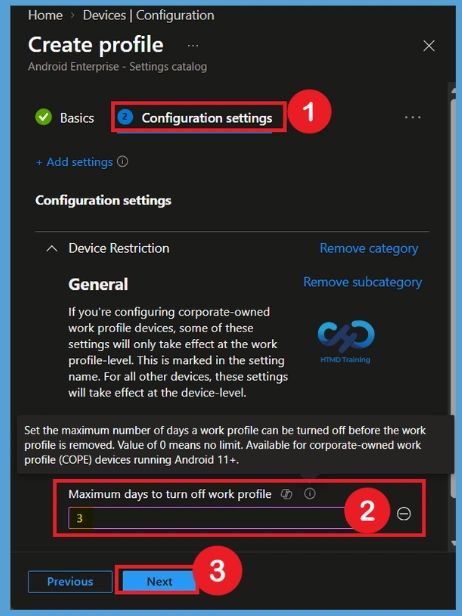
In the Scope tags section, you can add scope tags to the Limit Android Work Profile Switch-Off Duration. Click the + Add scope tag option to open the available scope tags and select the tag you want to apply to the policy. For example, select London as the scope tag for this policy. After selecting the required scope tag, verify that it is displayed under the selected scope tags. Once confirmed, click Next to continue.
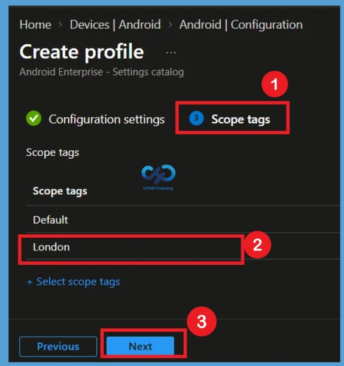
Importance of Assignment in Policy Deployment
You are now on the Assignments section. This is an important step because the Limit Android Work Profile Switch-Off Duration needs to be assigned to the appropriate users or device groups for deployment. Select Add groups under the Included groups section and choose the groups that should receive the policy.
- For example, select HTMD test policy and HTMD CPC Test as the target groups.
- Review the selected groups to make sure the policy will be deployed to the correct users or devices.
- Once the groups are confirmed, click Next to continue to the next step.
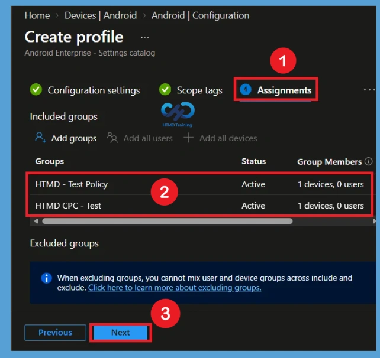
Review + Create
The Review + create page provides a final overview of the Maximum days to turn off work profile policy. Review the policy name, description, platform, profile type, configured number of days, scope tags, and assignments. Make sure the number of days is correct and that the intended groups are assigned. If all information is correct, select Create to complete the policy creation and make it available for deployment. Now you will get notification that the policy is created successfully.
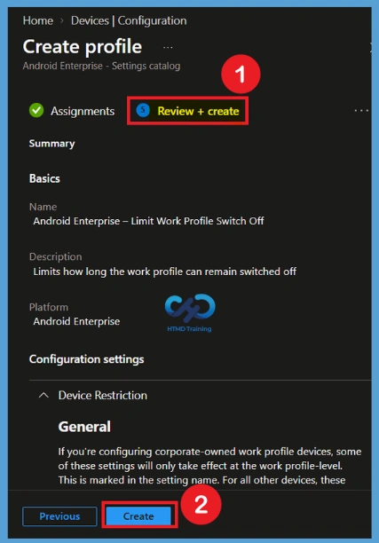
Monitoring Status
After creating and assigning the policy, open Devices > Configuration and select Android Enterprise – Limit Work Profile Switch Off. From the policy overview, review the available monitoring information. Check Device status and User status to see how the policy is being applied. Statuses such as Succeeded, Pending, Error, and Not applicable help administrators understand whether the policy has reached the targeted devices successfully.
- Here you can see the Policy is Successfully deployed to the groups.
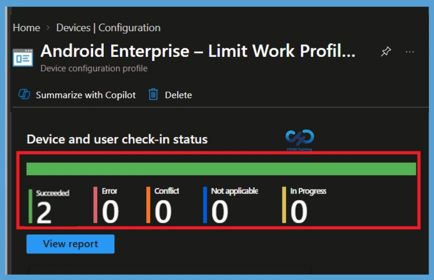
Remove Assigned Groups
If a group no longer requires the Limit Android Work Profile, open the policy and go to Assignments. Locate the group under Included groups and remove it from the assignment. After removing the group, save the changes so that the group is no longer targeted by the policy. Before making the change, check whether the group still requires the configuration for any business or security requirement.
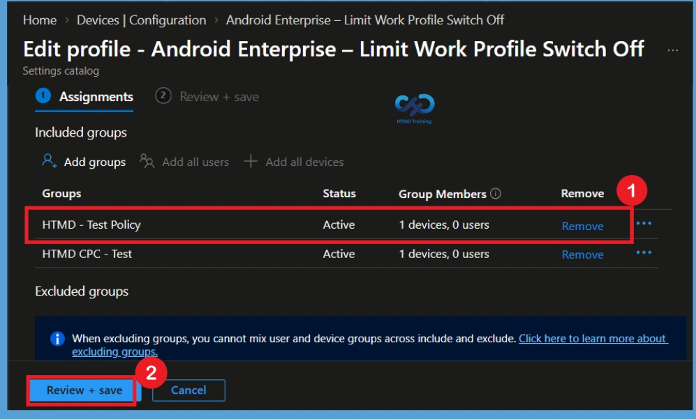
Delete Policy Permanently Maximum days to Turn Off Work Profile
When the Limit Android Work Profile Switch-Off Duration policy is no longer required, first review the policy assignments and confirm that it can be safely removed. This helps prevent an unwanted change to managed devices. Open the policy, select Delete from the 3-dot menu (See More Option), and confirm the deletion. Now the policy is permanently deleted from the tenant.
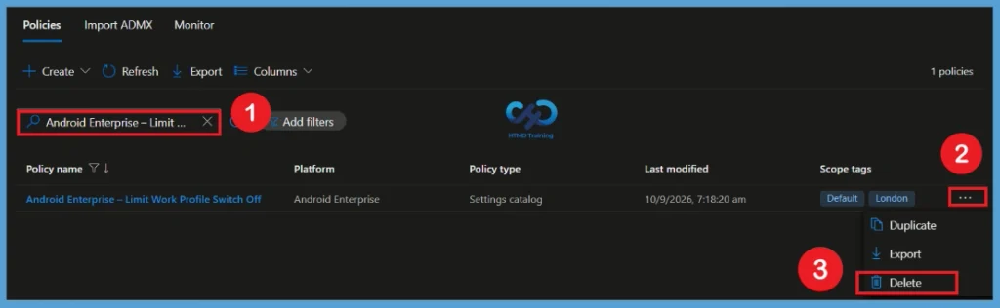
Need Further Assistance or Have Technical Questions?
Join the LinkedIn Page and Telegram group to get the latest step-by-step guides and news updates. Join our Meetup Page to participate in User group meetings. Also, join the WhatsApp Community and the Whatsapp channel to get the latest news on Microsoft Technologies. We are there on Reddit as well.
Author
Anoop C Nair is Workplace Technology solution architect with 25+ years of experience in global enterprise organizations such as JP Morgan, Capgemini, etc. He is Microsoft Certified Trainer. Microsoft MVP from 2015 onwards for consecutive 11 years! He also conducts Intune and modern workplace tech training for enterprise organizations. He is Blogger, Speaker, and Founder of HTMD Community and HTMD Conference. His focus is on Device Management technologies such as Intune, Windows, Cloud PC. He writes about technologies like Intune, SCCM, Windows, Cloud PC, Windows, Entra, Microsoft Security.